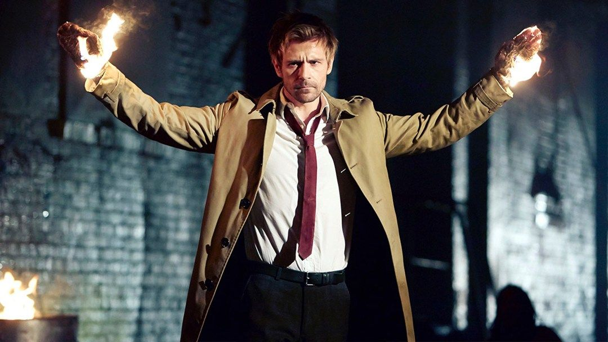
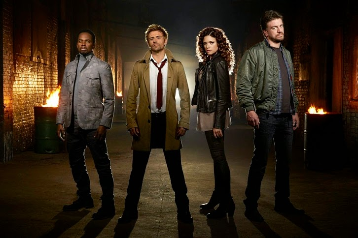
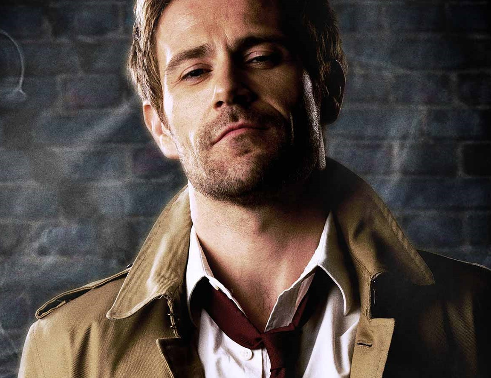
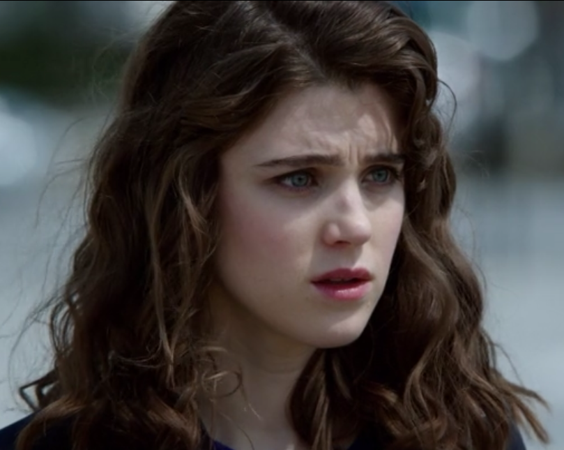
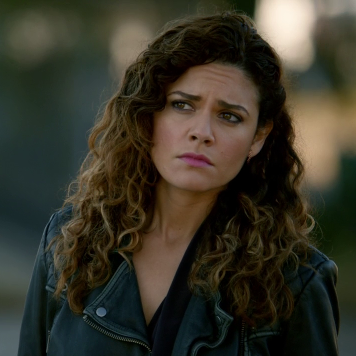
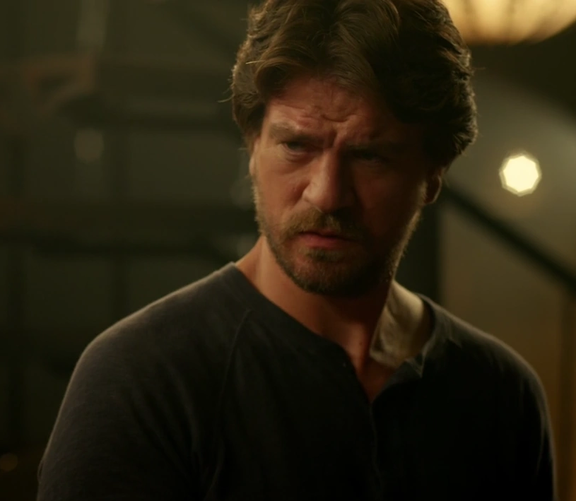
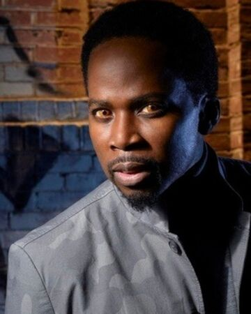
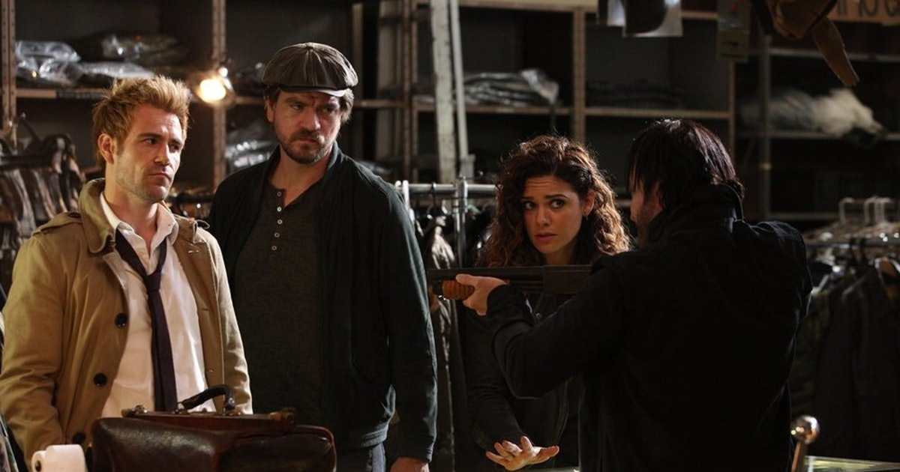

Constantine is an American occult detective drama television series developed by Daniel Cerone and David S. Goyer, based on the DC Comics character John Constantine.Matt Ryan stars as Constantine, a British exorcist and occult detective who actively hunts supernatural entities. On May 8, 2015, NBC canceled Constantine after only one season due to ratings not up to network standards. Ryan has said in the past that, were the show on another channel, the ratings would have been comparably high. Ryan would go on to reprise his role in guest appearances in The CW's Arrow and as a series regular in Legends of Tomorrow, retroactively setting the series within the Arrowverse. He also voices the character in the CW Seed animated web series, Constantine: City of Demons; the writer of the series J. M. DeMatteis stated it is a spin-off of the Justice League Dark film, in which Ryan also voiced Constantine.

Based on the wildly popular comic book series Hellblazer from DC Comics, seasoned demon hunter and master of the occult John Constantine specializes in giving hell... hell. Armed with a ferocious knowledge of the dark arts and his wickedly naughty wit, he fights the good fight — or at least he did. With his soul already damned to hell, he's decided to leave his do-gooder life behind, but when demons target Liv, the daughter of one of Constantine's oldest friends, he's reluctantly thrust back into the fray – and he'll do whatever it takes to save her. Before long, it's revealed that Liv's “second sight” — an ability to see the worlds behind our world and predict supernatural occurrences — is a threat to a mysterious new evil that's rising in the shadows. Now it's not just Liv who needs protection; the angels are starting to get worried too. So, together, Constantine and Liv must use her power and his skills to travel the country, find the demons that threaten our world and send them back where they belong. After that, who knows... maybe there's hope for him and his soul after all.

 1. Matt Ryan as John Constantine, Furcifer and Pazuzu |
 2. Lucy Griffiths as Liv Aberdine |
 3. Angélica Celaya as Zed Martin |
 4. Charles Halford as Chas Chandler |
 5. Harold Perrineau as Manny |
| Episodes | First Aired | Last Aired |
|---|---|---|
| 13 | October 24, 2014 | February 13, 2015 |
Based on the wildly popular comic book series "Hellblazer" from DC Comics, seasoned demon hunter and master of the occult John Constantine is armed with a ferocious knowledge of the dark arts and a wickedly naughty wit. He fights the good fight - or at least he did. With his soul already damned to hell, he's decided to abandon his campaign against evil until a series of events thrusts him back into the fray when an old friend's daughter becomes the target of supernatural forces.
